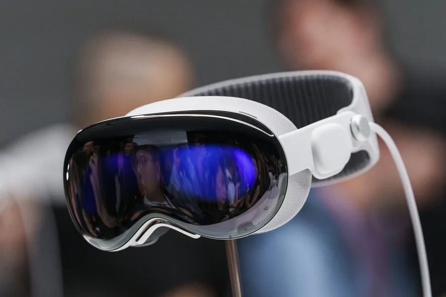

Categoria: Eletronico
Apple Vision Pro: óculos de realidade virtual chegam ao mercado nos EUA
Vendas em lojas físicas e virtuais começam nesta sexta-feira (2); não há data de lançamento confirmada para o Brasil
Postado em 3 de outubro de 2024 O Apple Vision Pro chega ao mercado para os consumidores dos Estados Unidos nesta sexta-feira (2). Os óculos de realidade virtual e aumentada da empresa norte-americana de tecnologia estavam em pré-venda no país desde 19 de janeiro.
Os dispositivos adquiridos antecipadamente começam a ser enviados aos consumidores nesta sexta-feira pela Apple. A promessa da empresa é de que os óculos vão transformar “a forma como as pessoas trabalham, colaboram, se conectam, revivem memórias e desfrutam de entretenimento”.
“O Apple Vision Pro é o dispositivo eletrônico de consumo mais avançado já criado. Sua interface de usuário revolucionária e mágica redefinirá a forma como nos conectamos, criamos e exploramos”, afirmou Tim Cook, CEO da Apple.
Nos Estados Unidos, o aparelho custa US$ 3.499 (cerca de R$ 17 mil) e é vendido nas lojas físicas e virtuais da Apple. Não há data confirmada para o lançamento do produto no Brasil.